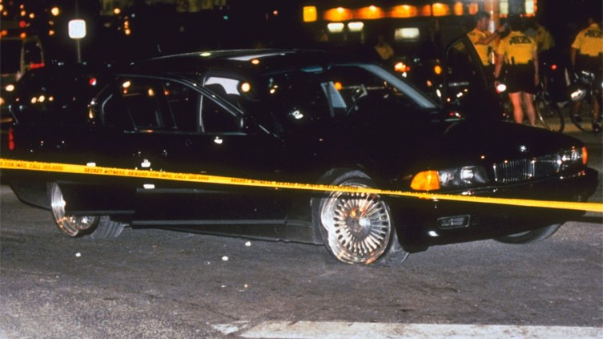

A 24 años del asesinato de uno de los raperos más influyentes de la historia revisamos las circunstancias de su muerte y las diversas teorías conspiratorias que han nacido alrededor de su figura.Hay momentos que cambian la historia. Uno de ellos fue el 13 de septiembre de 1996, fecha en la que falleció el músico 2Pac, tras pasar seis días peleando entre la vida y la muerte después de un tiroteo en el que la policía nunca capturó al culpable.
A 24 años de la muerte del influyente rapero, revisamos lo que se sabe de su asesinato y también las teorías conspirativas que se generaron a su alrededor.Oficialmente nadie ha sido condenado por la muerte de Tupac Shakur y la policía de Las Vegas mantiene, al menos hasta el 2018, el caso como abierto.
La teoría más plausible sobre la identidad del asesino de Tupac fue expuesta en una serie de artículos escritos por el periodista de Los Angeles Times Chuck Philips titulados “¿Quién mató a Tupac Shakur?”. En su artículo Philip señala que el rapero fue asesinado por miembros de los Crips por dos razones: la primera vengar la golpiza de uno de sus miembros, Orlando Anderson, en el lobby del MGM Hotel el mismo día del tiroteo.
La segunda, una jugosa recompensa de US$1 millón supuestamente ofrecida por el rapero Notorious B.I.G. a cambio de las vidas de Tupac y Suge Knight. El músico siempre negó estas acusaciones hasta su muerte en marzo de 1997, en un tiroteo similar al que acabó con la vida de Tupac.Según Philip, fue el propio Orlando Anderson la persona que acabó con la vida de Tupac.
A pesar de que el sujeto nunca pudo ser acusado formalmente - fue sospechoso en la investigación por un tiempo pero finalmente falleció en un tiroteo en 1998 - su culpabilidad queda casi asegurada por el testimonio de su tío Duane Davis, el cual aparece en el libro “Murder Rap” (2011) por el exdetective de Los Ángeles Greg Kading, quien se encargó de investigar tanto el caso de Tupac como el de Notorious B.I.G.
